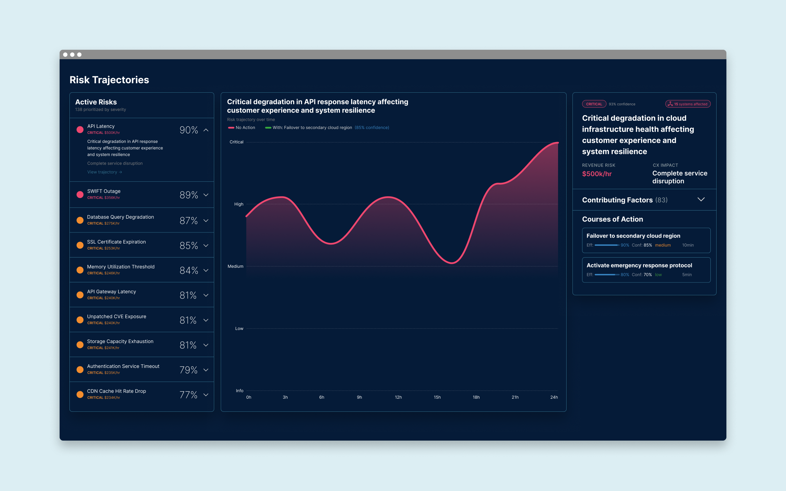
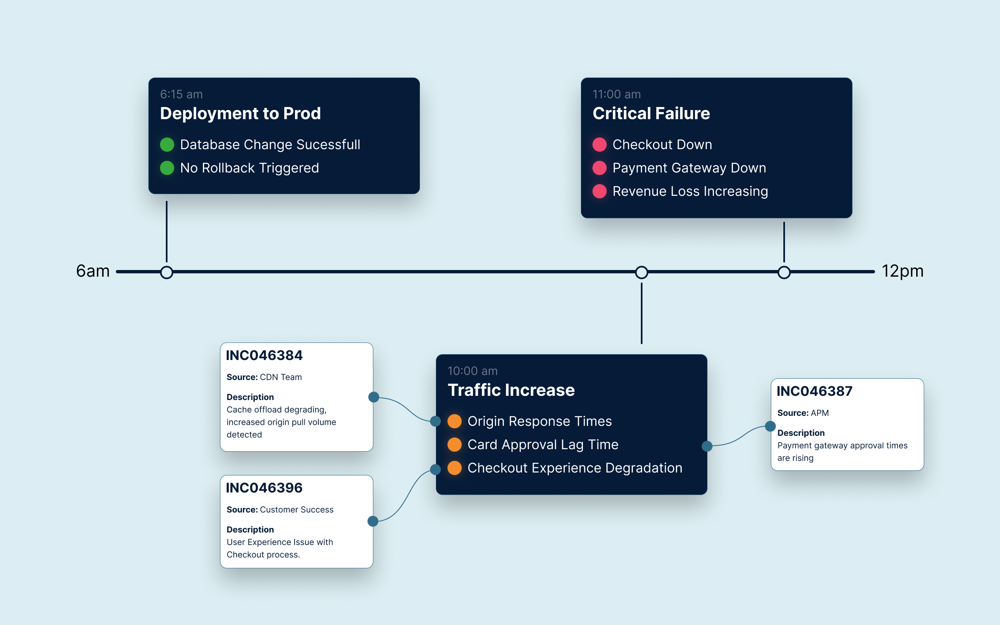
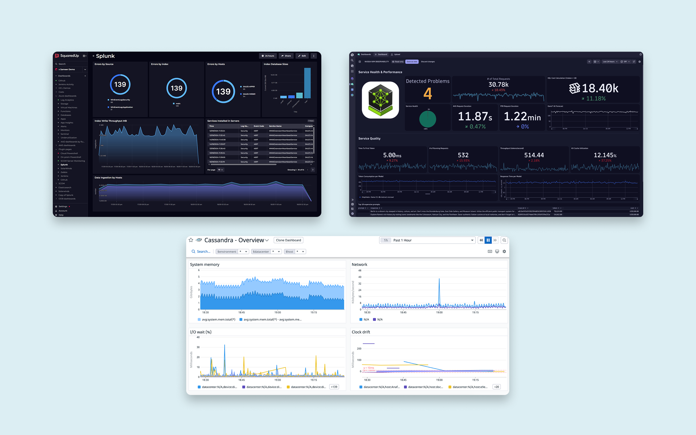
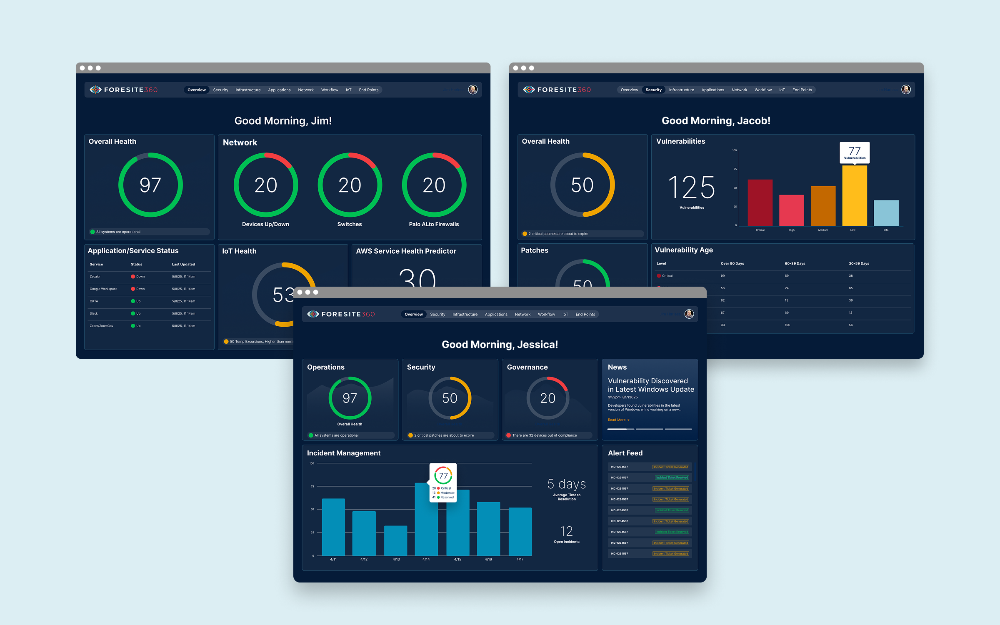
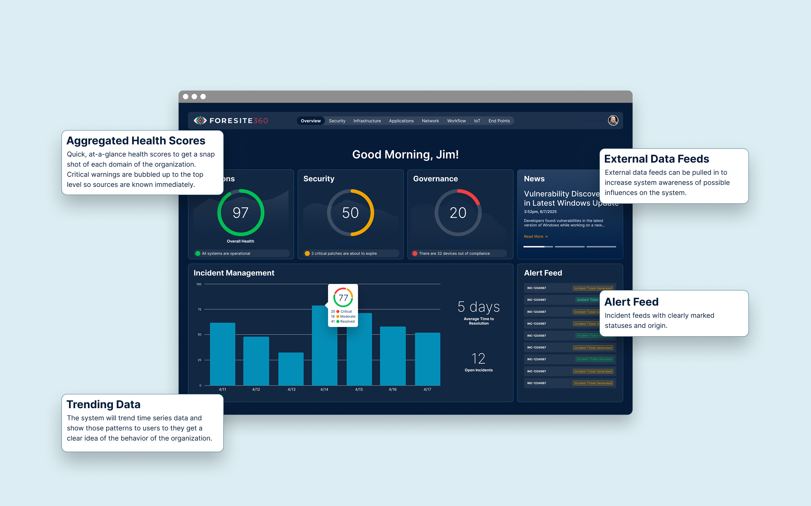
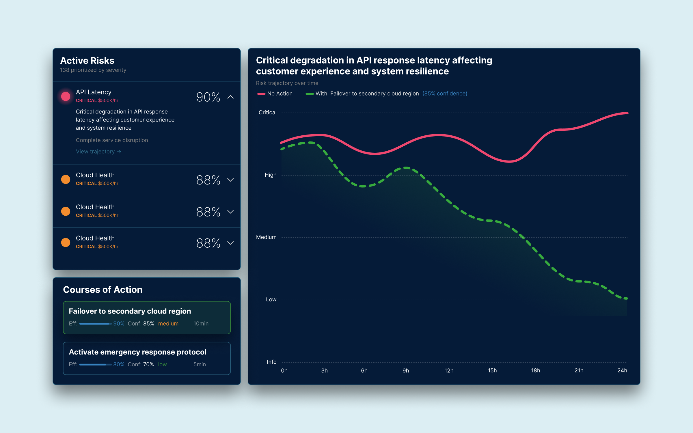
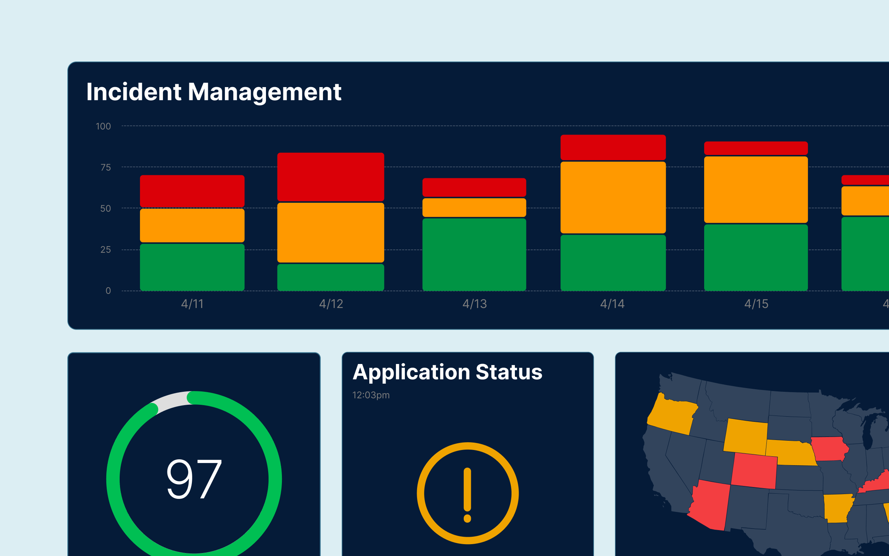
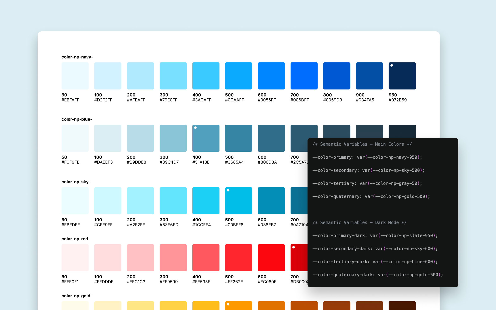
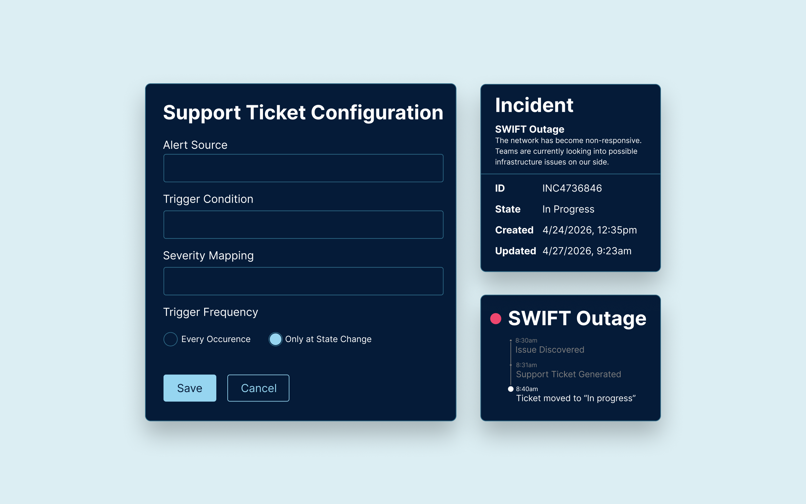

ForeSite360
In a nationwide organization with infrastructure spanning the country, teams across the organization all wake up to see alarm bells going off on their devices. Systems are failing, customer experience is degraded, and no one knows what happened. Each team starts submitting support tickets for each of the critical signals, but which one is the root cause?
Key Contributions
- Lead Designer
- Product Owner
- HTML/CSS for the Design System
Results
45%
faster incident resolution
30%
fewer support tickets initiated by users

Disaster Strikes
6:15 am: A routine deployment goes out; the dev team pushes dozens of these a week. Just a small database change; it feels safe, no rollback is triggered. All signals are green; the engineering team moves on to other tasks. 10:00 am: As traffic is picking up, we're starting to see certain customer touch points slowing down: checkout, card approval, etc. The CDN team is seeing a rise in origin response times, so they adjust their configuration, adding even more load onto an overextended system. Business Analytics is flagging it as a possible UX issue; red signals are starting to fire across the board. 11:00 am: Checkout is now down completely; every team with a critical warning is chasing down symptoms while the root cause goes ignored. The data has existed since deployment, but because of disconnected systems, the issue was never seen.

Three Screens, Three Realities
A CIO wakes up wondering, is the business running? Is it secure? Are our technology Investments returning value? They are constantly looking at uptime, infrastructure costs, and velocity of delivery.
The Enterprise Operations Team is asking, are our systems stable? How is our service availability? They feel the weight of these when alerts start firing and ticket volumes start to rise.
The security team constantly has its eyes on anomalous access patterns, vulnerabilities, policy violations, and compliance status.
Traditionally, all of these signals are separately viewed and separately analyzed. Each role is doing the best they can with the information they have. But it's not enough.

One Source of Truth
Enterprise teams don't just need a single place to see all of the separate signals. In order to quickly and efficiently reduce downtime and free up time to create real impact for your organization's future, you need to see all of your data, currently and historically, and be able to perform full analysis to find patterns throughout your organization so you can prevent problems before they start.

Your Organization At a Glance
At the very top level, we aggregated health scores across every domain of an organization. This allows a user at the very top level to see what the organization's health landscape looks like at any given moment. However, not everyone in your organization should have visibility into every data stream, so we added Role-Based Access Controls (RBAC) so that the available data is limited to only what each user has access to.
When every signal across the entire organization is visible at all times, users are subject to alert fatigue. If everything looks wrong, then the user doesn't even know where to start. They get analysis paralysis. We created tailored views for each of the main user roles. They can still access the rest of the data they have access to, but they're only initially shown the data that they care most about. They're able to see a simplified view of their domain, with all the information they need to make the critical decisions they need to.

Seeing Around Corners
The reason we can predict the weather is that we have models built off of historical data. We build similar models with an organization's data. This allows us to see upcoming risks, each with its own confidence score. Once we were able to solve quick resolution of current problems quickly, we turned our analytical powers towards predictive analytics. We can help shape the future of an organization, not just put out fires.
After a few attempts at showing how risk moves throughout the organization, we found it was more valuable to show how the risk can change over time, but also how that risk could be affected by prescribed courses of action. So each risk is paired with possible courses of action that can turn the tide of the risk. When one of those courses is selected, the user can see how the trajectory is affected.

Designed for Decisions
In order to build a dynamic system that provides highly actionable data visualizations based on cross-correlated data, we had to provide it with a large library of visualization types supported by back-end logic to help guide which visualizations would be most helpful. Partnering with our data science team, we built out a simplified set of visualizations to ensure that only the most critical things were the focus. Think of an entire data center's worth of EC2 instances, our system visualizes the entire group and gives you a breakdown of optimized instances vs the under and overutilized ones.
As a system gets more and more complex, its underlying design system becomes more and more critical to its legibility. I worked side by side with the engineering team, submitting PRs to the codebase and having them merged as I was able to refine our design tokens across multiple products. Understanding and contributing to the code itself changes how you design the components. Having a hand in both the design and the code creates a sense of ownership and only adds to the dedication of getting it right.


We're Already On It
We automated the ticketing process by pairing our access to the API with our infrastructure-wide dependency map. We were able not only to submit a ticket at the moment of failure, but also because our system is able to perform immediate root cause analysis. This helps prevent false tickets from being submitted that only highlight symptoms, not the source. The immediacy of our submission helped decrease resolution time, and the visibility into the root cause helped reduce needless tickets, allowing the support teams to attack the right issue faster.
With our system's access to the ticketing system, after we submit the ticket, we're also able to track its progress. That progress can be posted in components within the system that highlight the critical alert. So the moment someone sees that something is wrong, they also know what's being done about it.

Conclusion
Through a vast array of custom-trained models, machine learning algorithms, and other solutions our team built, we were able to prevent downtime to critical infrastructure that Centers for Medicare and medicaid Services beneficiaries depend on for ongoing healthcare. We didn't just create a lifeline for an organization; we created it for their users too.